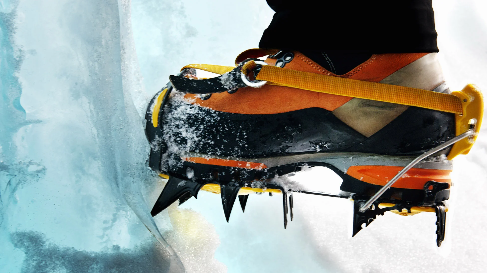

Выбор кошек

Кошки подбираются в связке с ботинками и типом маршрута. Самая частая ошибка — выбирать модель отдельно, не проверяя реальную совместимость крепления с вашей обувью.
Для простых снеговых выходов обычно подходят более универсальные системы, а для крутого льда и технических участков важна жесткость и точная фиксация без люфта.
Обратите внимание на форму и количество передних зубьев. На фирне и мягком снегу поведение отличается от жесткого льда, поэтому «универсальность» всегда имеет пределы.
Перед маршрутом обязательно отрегулируйте длину платформы и проверьте фиксаторы в перчатках. Если настройка сложная дома, на ветру и холоде она станет еще сложнее.
После каждого выхода очищайте кошки от снега и наледи, осматривайте крепления и состояние ремней. Мелкие повреждения лучше устранить заранее, пока они не превратились в отказ на маршруте.
Практичное правило: лучше чуть проще модель, но идеально подходящая к вашим ботинкам и рельефу, чем «топовая» версия с компромиссной посадкой.